MLX90396 Stray Field Immune (SFI) Joystick
3D Joystick Model, Raw Signals, Polar Radars & Stray Field ComparisonInjects 5.0 mT external uniform stray field via SCPI GPIO on physical rig (Melexis IO A0).

Frame Health
Everything on this tab is the unmodified reply from the three transfers the SFI loop issues each cycle: 0xFC000 and 0x03F00 for the twelve absolute pixels, 0x000AC for the four 2px gradient channels. Nothing is averaged, scaled or clamped.
| Source | -- |
|---|---|
| Status byte | -- |
| Function | -- |
| Data ready | -- |
| Flags | -- |
| CRC | -- |
| Loop period | -- |
Absolute Pixels — raw LSB
Signed 12-bit counts, full scale ±2048. The averages are the four-pixel means the dome uses for the absolute heading.
| Channel | Count |
|---|---|
| X0 | -- |
| Y0 | -- |
| Z0 | -- |
| X1 | -- |
| Y1 | -- |
| Z1 | -- |
| X2 | -- |
| Y2 | -- |
| Z2 | -- |
| X3 | -- |
| Y3 | -- |
| Z3 | -- |
| Average X | -- |
| Average Y | -- |
| Average Z | -- |
| Peak |count| | -- |
Differential Channels — raw LSB
The chip's own inter-pixel gradients, read in a single transfer (mask 0x000AC: X02, Z02, Y13, Z13). They feed the SFI radar and the dome. The counts are converted to mT/mm by 20 × pixel pitch (the Pixel pitch field in Calibration Tuning); a magnet sitting centred reads a small gradient — that is the null, not a missing magnet.
| Channel | Count |
|---|---|
| X02 | -- |
| Z02 | -- |
| Y13 | -- |
| Z13 | -- |
Dome Output
What the 3D Joystick Model tab is drawing, after the 2px gradient → tilt mapping is applied.
| Position source | Differential 2px (dBz/dx, dBz/dy) |
|---|---|
| Tilt X | -- |
| Tilt Y | -- |
| Press magnitude | -- |
| Press state | -- |